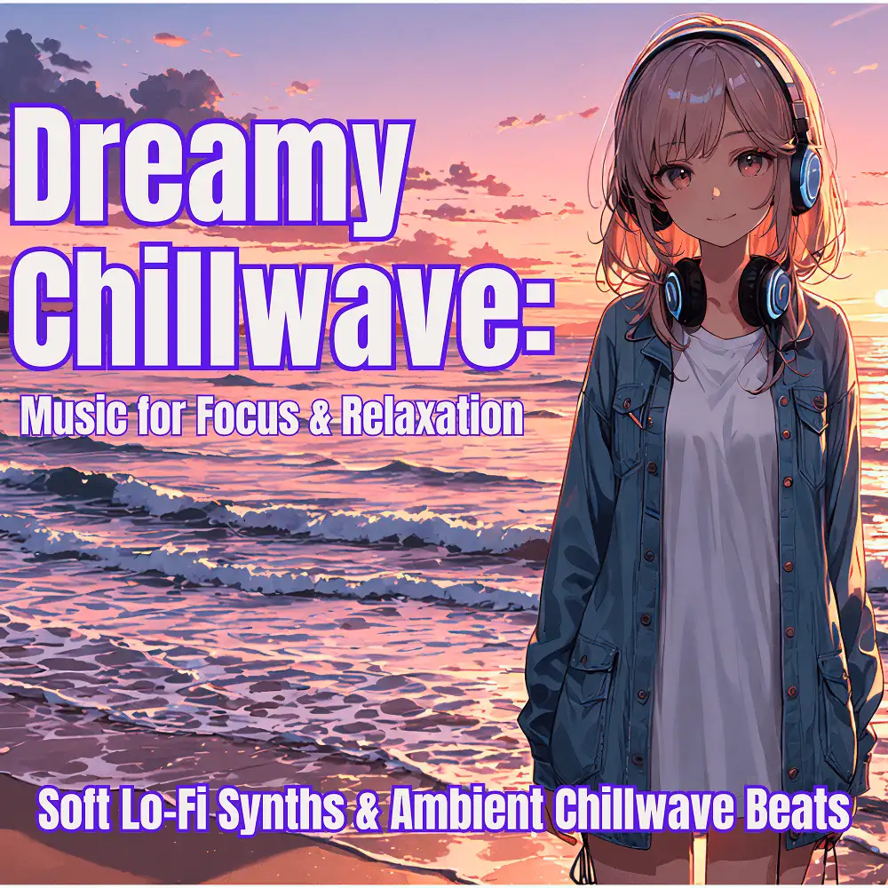

Chillwave · Electronic · Instrumental
Dreamy Chillwave: Music for Focus & Relaxation
Nanashino-chan
Explore Dreamy Chillwave: Music for Focus & Relaxation by Nanashino-chan: 27 instrumental tracks spanning Chillwave / Electronic / Instrumental. Start with Twilight Reverie / Floating Synth Waves, preview the collection and find your favorites on streaming services.
2025-05-20 · Released · 27 tracks · Instrumental
Preview the album
The jacket stays here until you choose a track. Playback uses YouTube.
YOUTUBE PREVIEW
Choose a track to listen
The jacket stays here until you choose a track. Playback uses YouTube.
If playback is unavailable, open the album or track on the streaming service.
Find this album on streaming services
Links marked “search” open search results. Select the album or track on the service.
Track list 27
- 01Twilight Reverie
- 02Floating Synth Waves
- 03Ethereal Reflections
- 04Soft Synth Waves
- 05Mellow Reflections
- 06Serene Horizon
- 07Soft Pulses
- 08Luminous Drift
- 09Whispers of Nostalgia
- 10Calm Seas
- 11Warm Breezes
- 12Soothing Reverie
- 13Fading Memories
- 14Deep Dive
- 15Tranquil Thoughts
- 16Midnight Glow
- 17Moonlit Waves
- 18Restful Reflections
- 19Radiant Dreams
- 20Velvet Sunset
- 21Silent Whispers
- 22Infinite Serenity
- 23Echoes of the Night
- 24Ethereal Journey
- 25Softly Fading
- 26Gentle Breeze
- 27Final Waves
Find a sound for your next post
Copy “Nanashino-chan + track title” and paste it into your social app’s music search. Availability depends on your region and account. Copying the name does not grant usage rights.